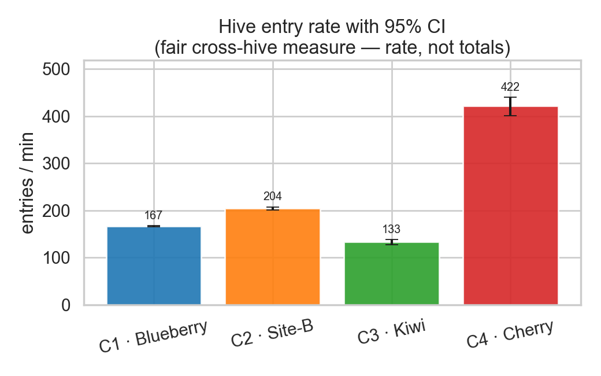
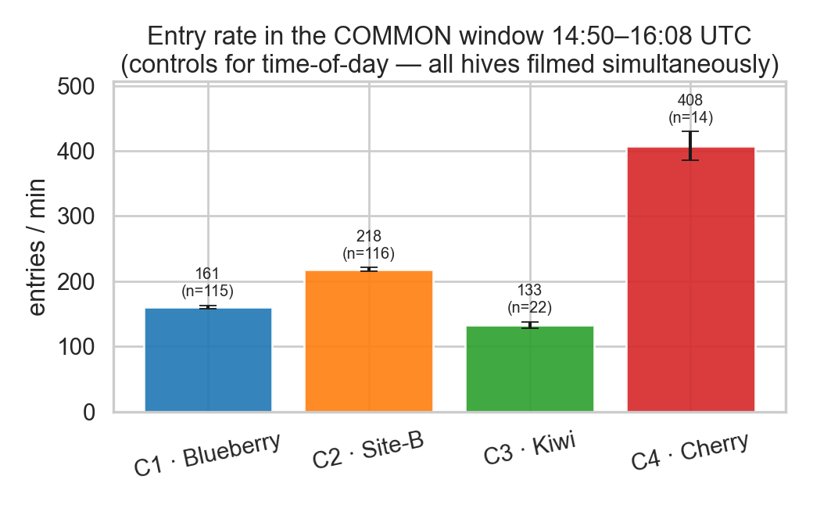
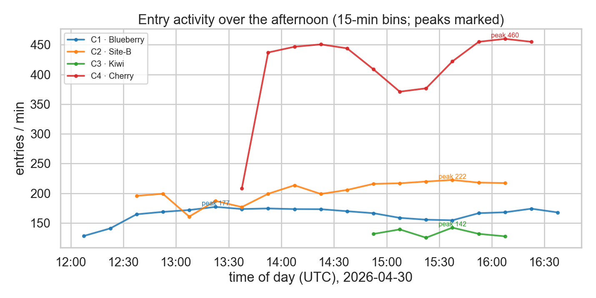
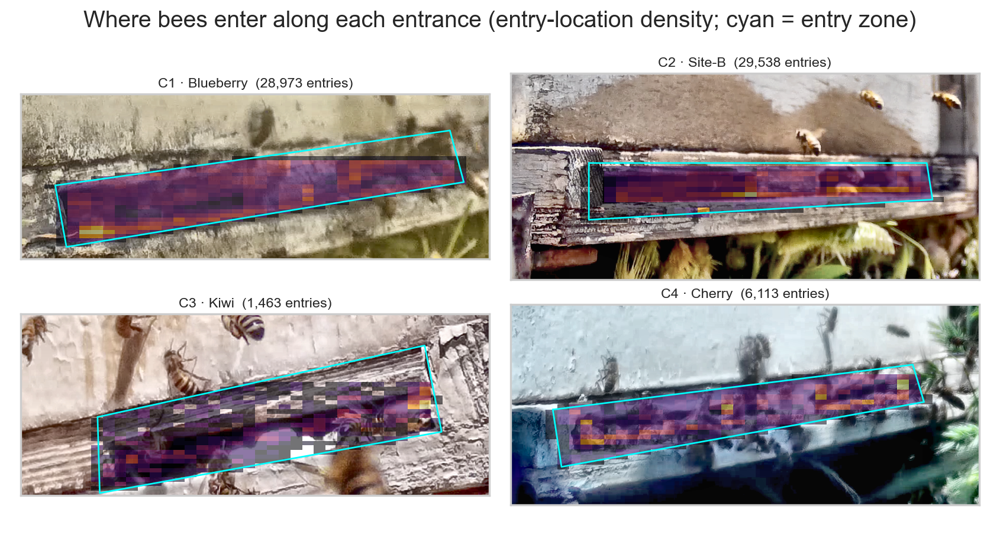

Bee entry traffic across four hives
Do hives placed in different environments differ in how many bees enter? · 2026-04-30,
one afternoon (~12:00–16:40 UTC) · 4 hive-entrance cameras · 66,087 counted bee entries.
Yes — the four hives differ dramatically and significantly in bee-entry traffic.
Ranked by entry rate (bees entering per recorded minute):
| Hive · orchard | entries/min | total | clips |
|---|
| 🥇 busiest | C4 · Cherry | 422 | 6,113 | 29 |
| 🥈 | C2 · Site בהג״ט | 204 | 29,538 | 289 |
| 🥉 | C1 · Blueberry | 167 | 28,973 | 348 |
| least busy | C3 · Kiwi | 133 | 1,463 | 22 |
Every pairwise difference is statistically significant (Mann–Whitney U,
p ≤ 1e-09), and the ranking holds in the common window 14:50–16:08 UTC
when all hives were filmed at once — so it is a genuine between-hive difference, not a time-of-day
artefact. The busiest hive (Cherry) had ~3.2× the entry rate of the
quietest (Kiwi).
The evidence

Entry rate per hive with 95% confidence intervals — the core comparison (entries per recorded minute).
Restricted to the window when all four hives were filmed simultaneously — controls for time-of-day.
Entry activity over the afternoon (15-min bins) — when each hive peaks.
Where along each entrance the bees actually enter (entry-location density over the entrance image).
How to read these numbers
- Compare rates, not totals. These are motion-triggered cameras that recorded for very
different durations (C1/C2 hours, C3/C4 minutes), so total entries mostly reflect recording
time. The entries-per-recorded-minute rate is the fair measure of how busy each entrance was.
- One afternoon. This is a single day's recording; it shows the hives did differ on this
afternoon. The common-window cut controls for time-of-day, but attributing the difference to specific
environmental factors would need more days/sites.
- Counts are robust ballpark estimates (±~10% vs hand-labelled ground truth on the validation
clips), not exact. C2 carries the most uncertainty (camera moved + grass progressively occluded
its entrance); C1 is the most stable. Method + validation in the technical detail below.
Data — run your own analysis
per-clip entries (CSV)
15-min bins (CSV)
per-clip + stats (JSON)
timeline + gaps (JSON)
Each row is one ~30s clip: camera, absolute UTC time, duration, entries, entries/min.
Methods & technical detail
Full report
Architecture
All visuals (gallery)
Camera-geometry review
Method & validation
(interactive — run the local viewer)